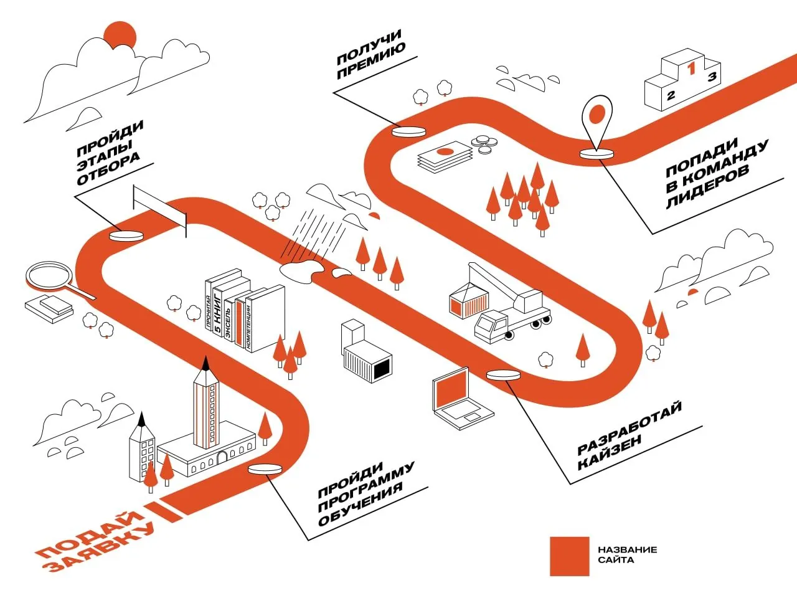
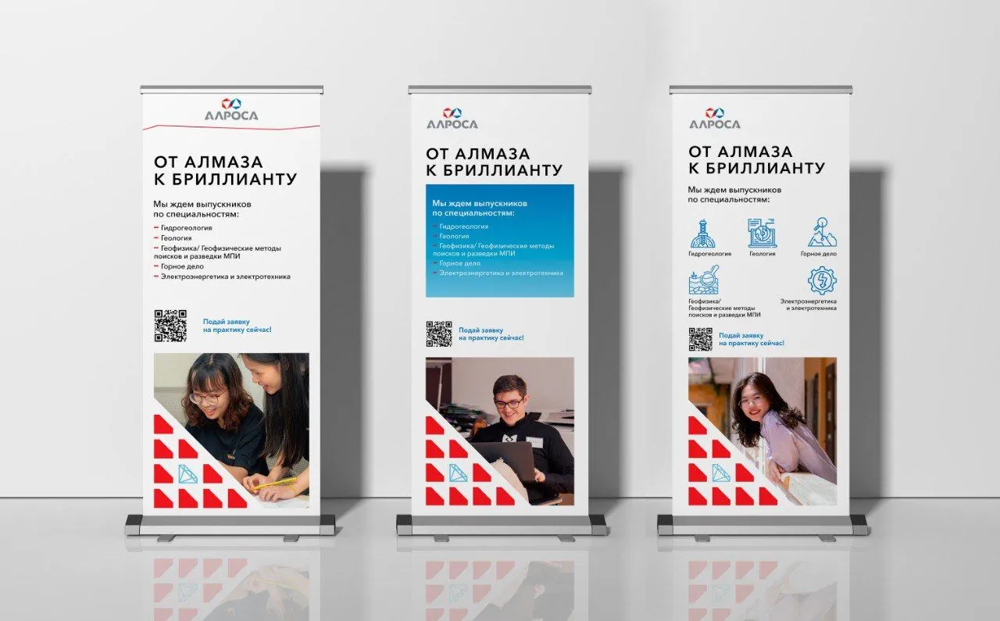
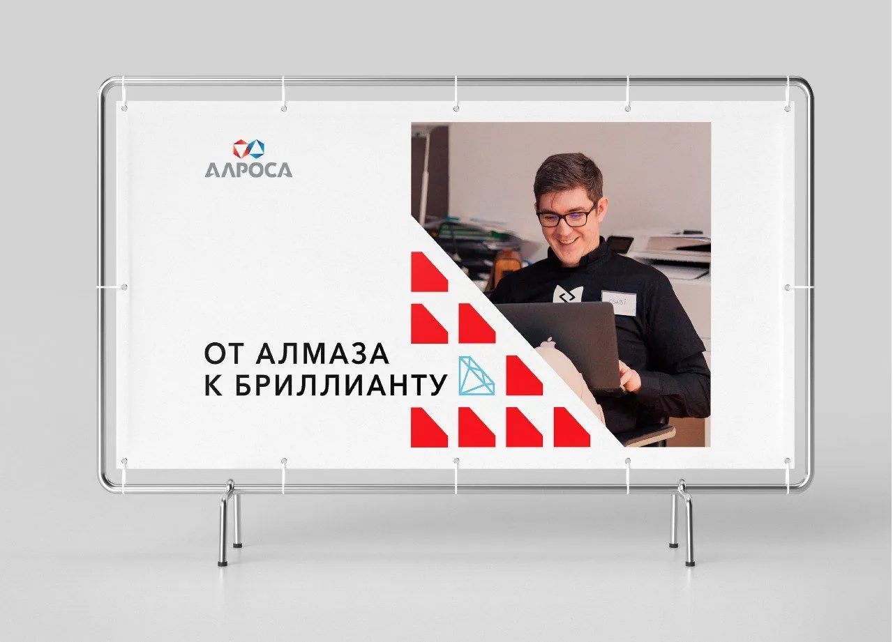
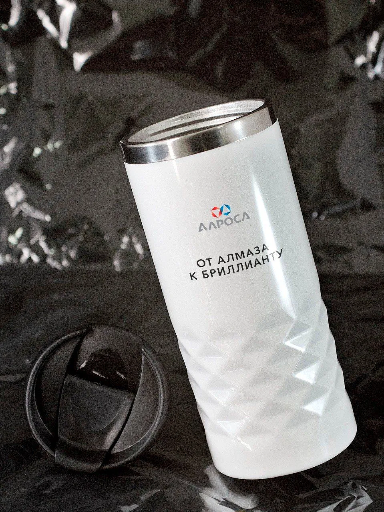
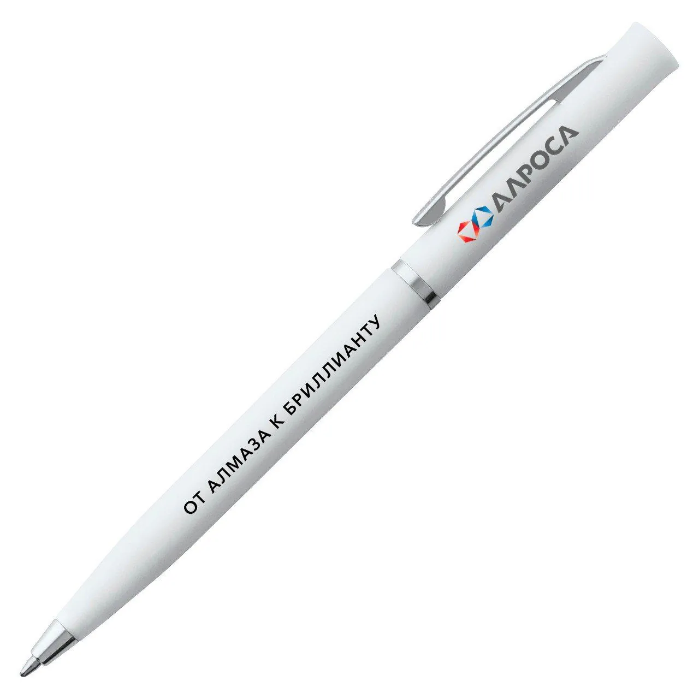
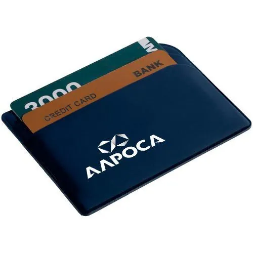
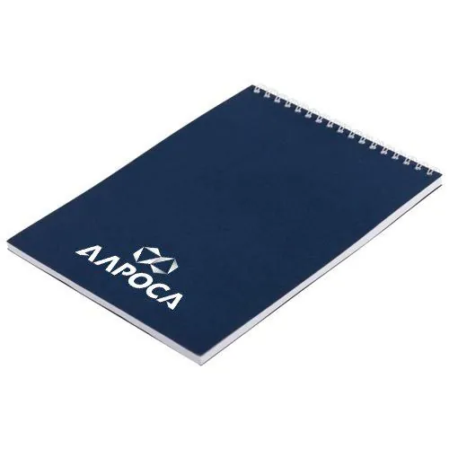
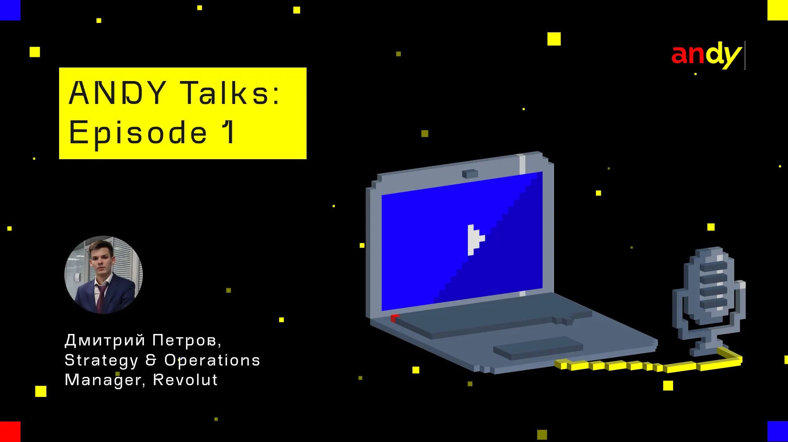
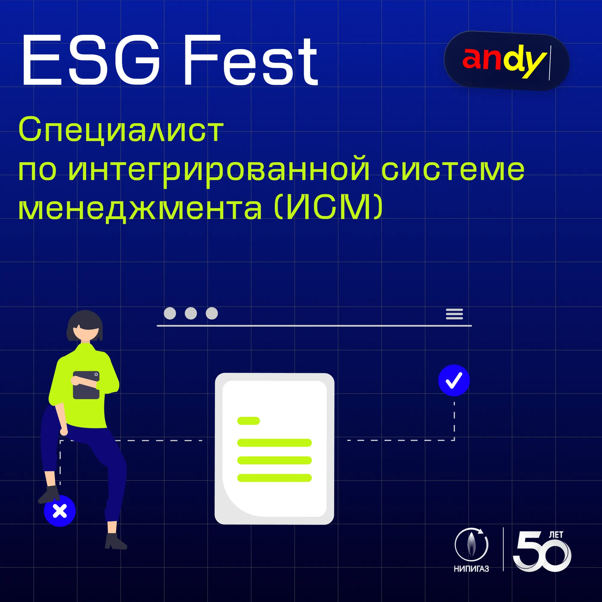

Ancor · Стаффинговая компания
Мерч, иллюстрации, лендинги и соцсети для клиентов Ancor
Коротко
Вместе с HR-командой Ancor делала мерч, иллюстрации, печатные материалы, соцсети и лендинги для крупных клиентов — Алросы, Nissan, РГТ — и для внутреннего мероприятия ESG Fest.
Контекст
ANCOR (АНКОР) — стаффинговая группа компаний, которая оказывает услуги в области аутсорсинга, подбора персонала и кадрового консалтинга.
01Задачи
Что было создано
- 01Мерч, посты для соцсетей и роллапы для Алросы
- 02Печатные материалы и иллюстрации во внутренних презентациях для Nissan
- 03Упаковка соцсетей для внутреннего мероприятия ESG Fest
- 04Лендинги для РГТ и Nissan
- 05Презентации для отчётов и выступлений Ancor
02Nissan
Плакаты и иллюстрации

03Алроса
Роллапы и мерч






04Соцсети
ANDY Talks и ESG Fest



